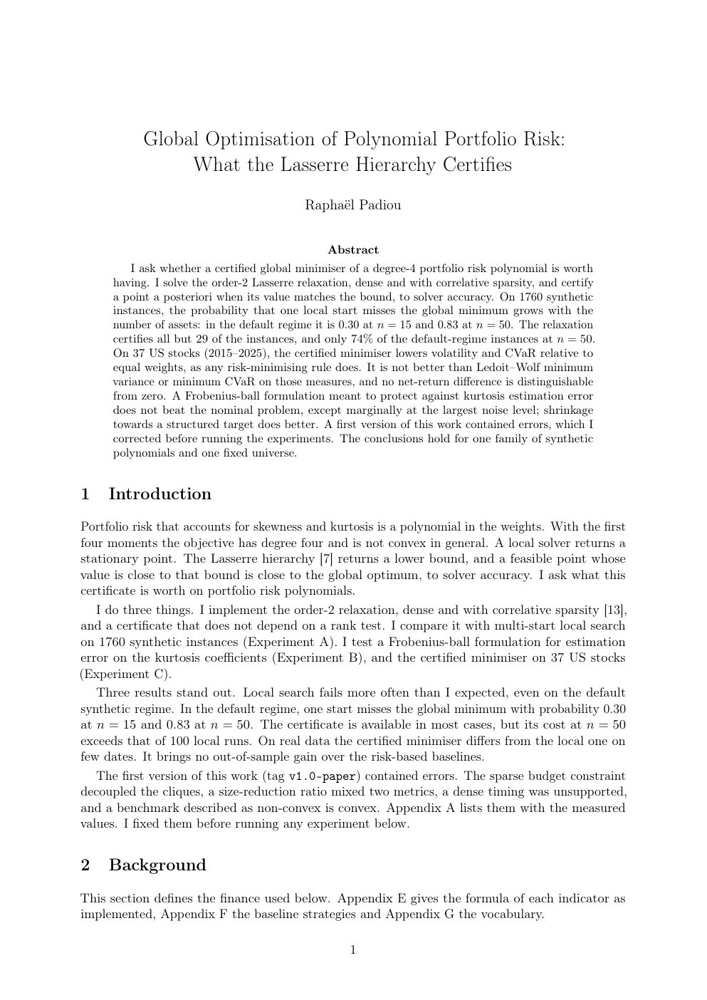

sos-portfolio. Portfolio optimization under a degree-4 polynomial risk measure via sums of squares and the Lasserre hierarchy (SDP).

M2 student, MPRI
Télécom Paris
sos-portfolio. Portfolio optimization under a degree-4 polynomial risk measure via sums of squares and the Lasserre hierarchy (SDP).
